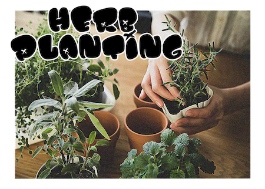

City Grub will be partnering the Mission Community Market to offer a variety of farmers, small local businesses, and community programs.
In partnership with the San Francisco Marin Foodbank, City Gub will host a live food drive in addition to an open pantry.


Community activities include live music from local bands and an herb planting workshop where anyone can take home planted herbs.